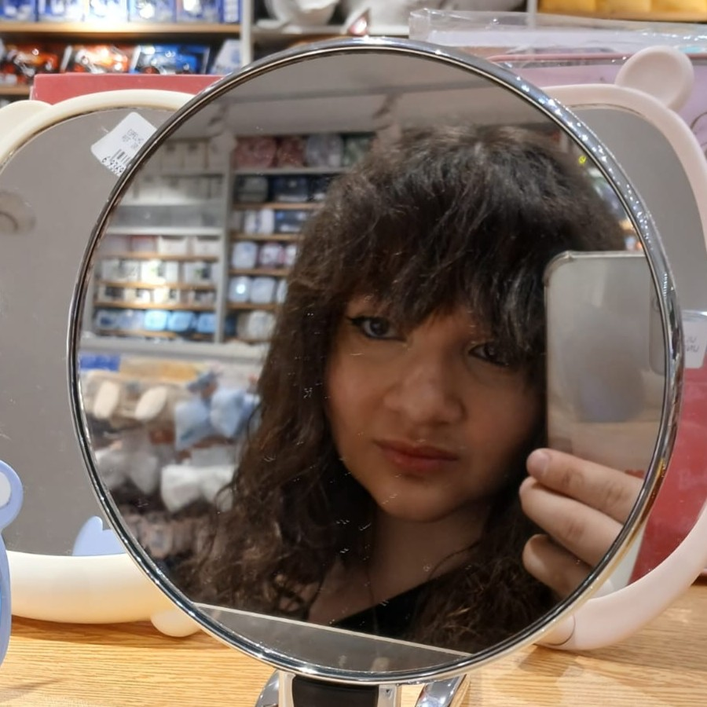

Meu nome completo é Bianca Bazoni Macedo, nasci no dia 18/10/2010 e atualmente tenho 15 anos. Moro com meus pais na zona norte da capital de São Paulo, faço esportes como corrida de rua, vôlei e academia. Sou filha única e não tenho animais de estimação. Nos feriados e aniversários eu vou para São Caetano com meus pais para ver minha família que mora por lá. Costumo viajar bastante para o interior para ver meus tios e para a praia, que é um dos meus lugares favoitos que já fui. Gosto bastante de ler livros e ver séries. Minha cor favorita é rosa e meu passatempo favorito é correr e ler livros, ambos escutando música.


Essa sou eu atualmente.




Alguns dos lugares que eu desejo visitar são: (Clique nas fotos para ver seu perfil na wikipedia!)


Nunca saí do estado de São Paulo, mas alguns lugares que visitei no estado e que me encantei foram: (Clique nas fotos para ver seu perfil na wikipedia!)